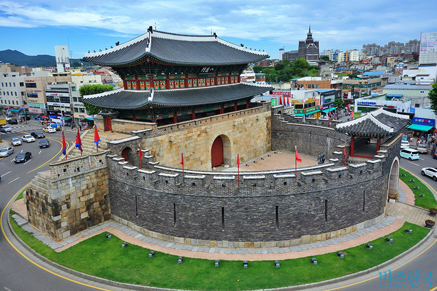
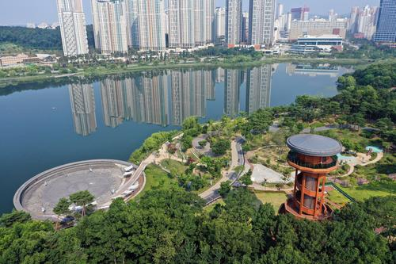
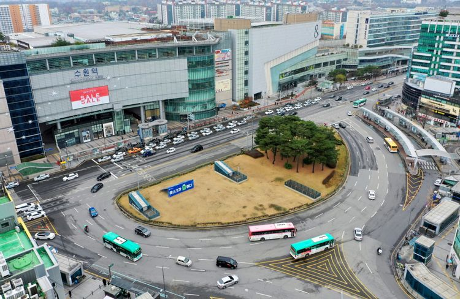

수원화성
조선 정조시기에 지어진 성곽 건축물이다. 1997년 유네스코 세계유산으로 등재받았으며
현재의 수원화성은 자연재해와 한국전쟁으로 인해 파괴된 것을 일부 복원한 상태이다.

광교호수공원
광교신도시의 랜드마크로 2개의 호수를 끼고있어 굉장히 넓은 공원이다.
물놀이터,장디광장,요트장,캠핑장 등 즐길거리가 많다.

수원역
경기도 최대의 철도역이며 수원 최대의 번화가이다.
